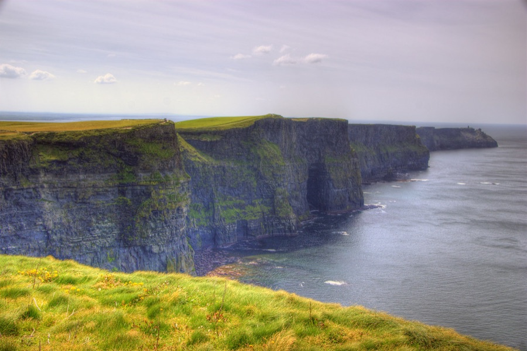
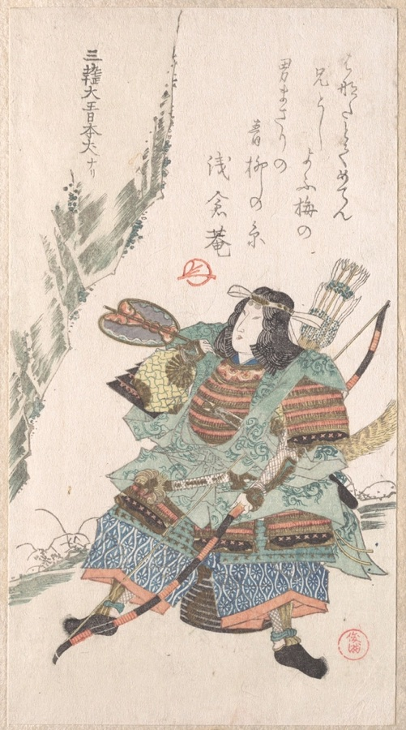
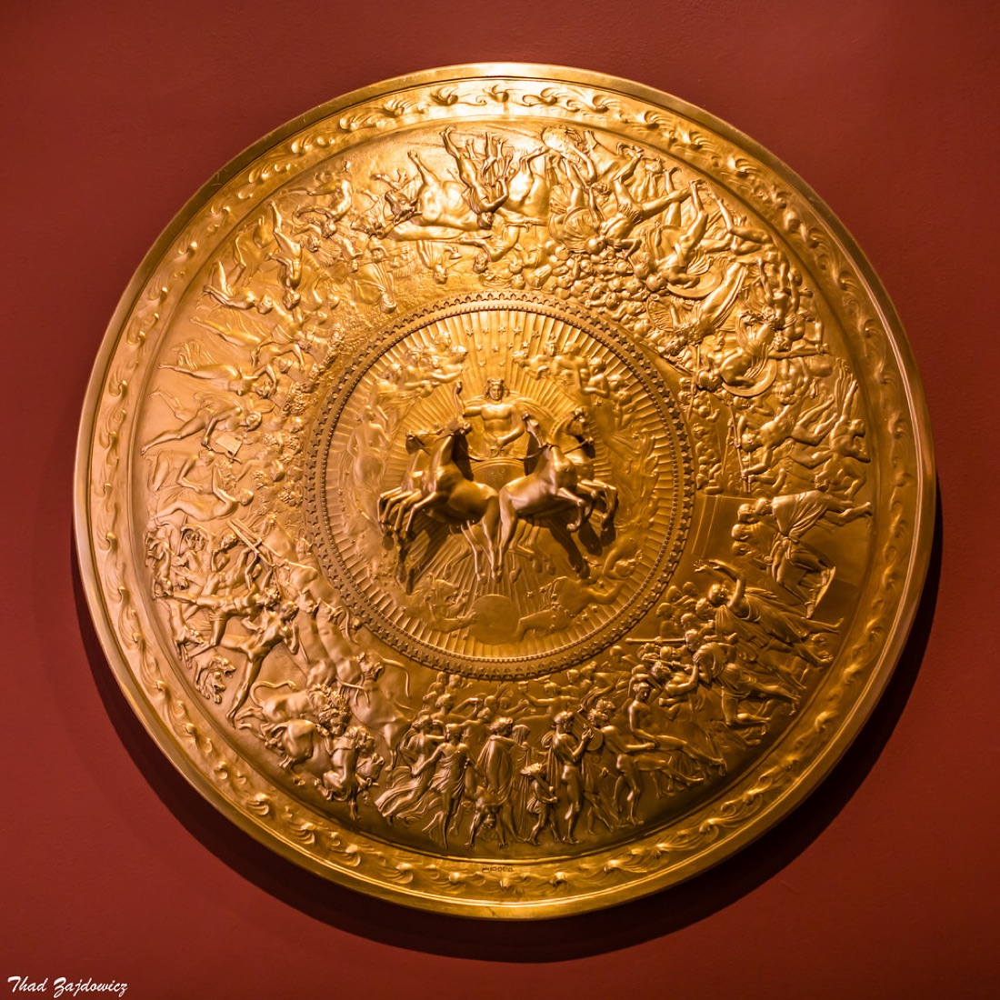
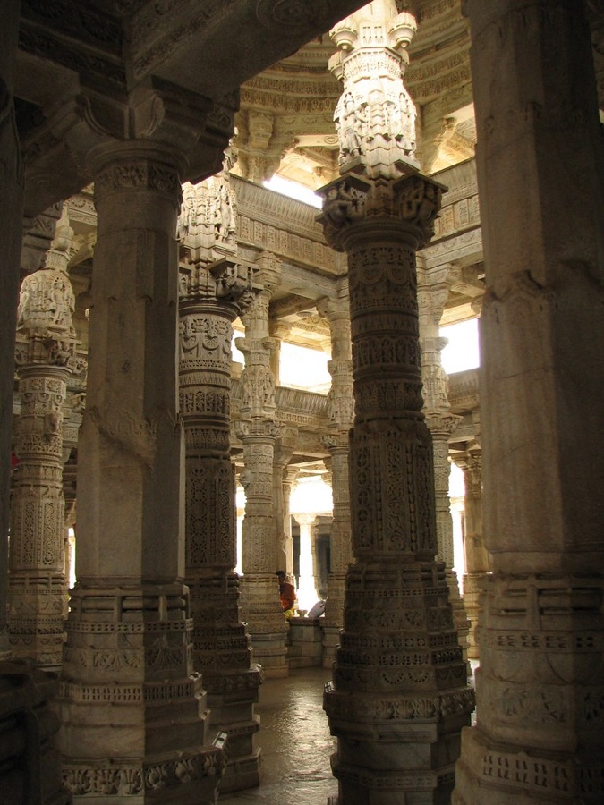
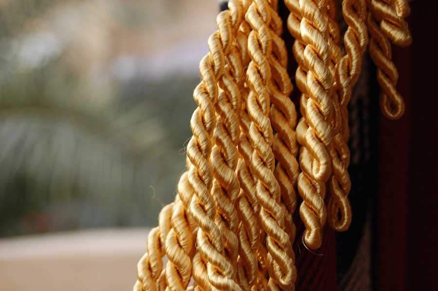

Воительница с сердцем дипломата. Я покинула скрытый остров амазонок по собственной воле, потому что миру, как оказалось, нужна помощь. А я не из тех, кто отворачивается.
Меня зовут Диана, я дочь королевы амазонок. Меня учили сражаться лучше любой армии, но воспитали в вере, что истинная сила — в сострадании. Я пришла к людям не завоёвывать, а защищать; не судить, а понимать. Хотя, признаюсь, поначалу ваш мир меня сильно удивил. В хорошем и в плохом.
Настоящая сила без доброты превращается в тиранию, а доброта без силы остаётся беспомощной. Я стараюсь держать и то, и другое. Не выношу несправедливость, ложь и жестокость к слабым — и верю в людей даже тогда, когда они сами в себя не верят.

Меня знают как воительницу, но махать мечом — далеко не главное моё занятие. Настоящая работа сложнее: защищать, мирить и говорить правду там, где её боятся.

Мой главный капитал — сочетание боевой мощи и моральной ясности. Я могу победить почти любого, но ценно не это, а то, что я знаю, когда бить, а когда протянуть руку.
Без второго первое опасно, без первого второе беззащитно.
Моя основная деятельность. Я встаю между слабыми и теми, кто хочет их обидеть. Если нужен щит для тех, кому больше не на кого положиться, — это ко мне, в прямом и переносном смысле.

Лучшая битва — та, которой удалось избежать. Я умею вести переговоры, гасить конфликты и находить общий язык там, где другие видят только врагов.
Мой Лассо Истины заставляет говорить правду. В мире, полном лжи и манипуляций, я — та, кто добывает и отстаивает истину. Считайте это службой доверия и честности.
Я показываю, что сила и доброта совместимы: можно быть и решительным, и милосердным. Быть образцом — тоже работа, и я к ней отношусь серьёзно.
Сверхчеловеческая сила и мастерство воина, Лассо Истины, неразрушимые браслеты, щит и меч, века опыта, дипломатическая выучка и непоколебимая вера в добро в людях. Но самый ценный мой ресурс — умение выбрать сострадание там, где проще ударить. Этому не учат в бою; это выбираешь сам.
Будьте честны — со мной иначе просто не выйдет (Лассо, помните?). Я ценю смелость, доброту и готовность защищать тех, кто слабее. Не терплю жестокость, ложь и трусость перед лицом несправедливости. Дайте мне правое дело — и я встану за него до конца, щитом и словом.

«Я сражаюсь за мир, а не ради войны. Лучший исход — тот, где никто не пострадал, а справедливость всё равно восторжествовала».— Диана, Чудо-женщина